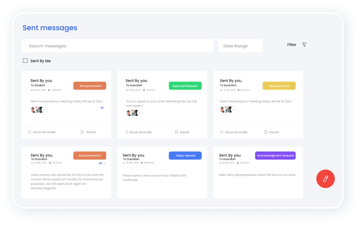
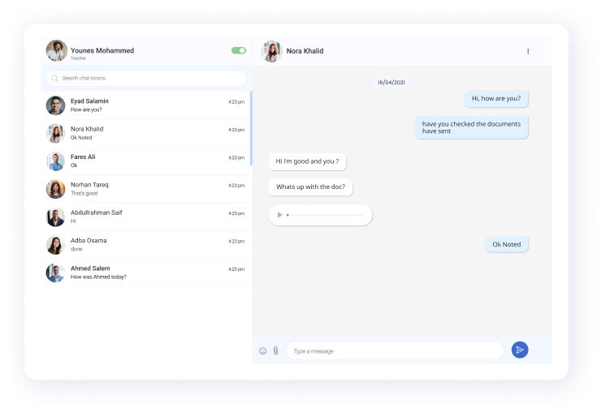
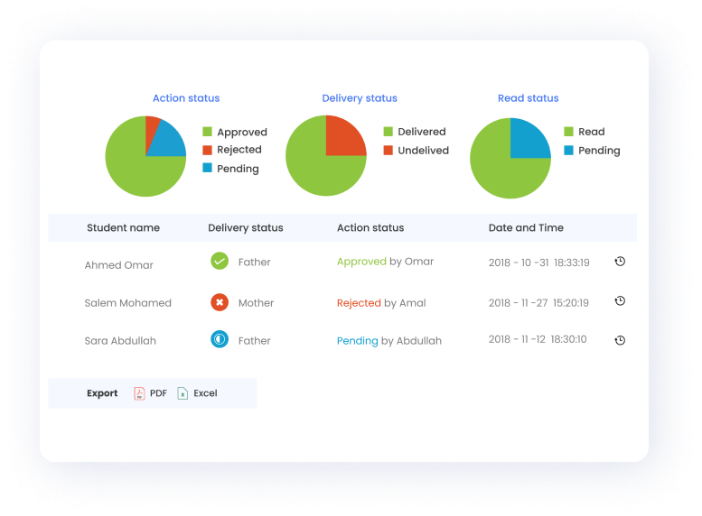

Top features to look out for in a
Classroom App
The market offers a wide range of Classroom Apps to help schools gauge and improve their communication and increase parent engagement.
But it is essential to have an in-depth look at the best classroom apps available to choose from the market, as each software is distinct in its features and capabilities. So here are a few key features you might want to consider before deciding on a classroom app for your school communication needs.
Comprehensive Dashboard
A dashboard is a space where all the schools can overview and manage all the communication activities. As the school communication apps are established to monitor and control school communication activities, such an application must have an intuitive and user-friendly dashboard. Creating such a space makes it easier for schools to overview all the engagement activities in one place. So the school administration can understand how their communication activities look and take the necessary actions when required.
Most modern classroom apps have a dashboard that provides all the necessary functionalities to manage the entire communication activities happening inside the school right from the dashboard. Usually, as the dashboard is where most activities are monitored and new communication activities are initiated, most modern school communication platforms invest heavily in the user-interface design and features to make the experience intuitive and clutter-free for smooth human interactions.
However, when you're in the market for a classroom app, it's a good idea to try out the various apps available in the market and choose the one with a dashboard that has all the functionalities and suits your needs.

Instant Communication
The main goal of a classroom app is to consolidate all types of school communication activities and make it easy for everyone to access all the communication activities instantly as it gets created and shared with them. So any interaction or engagement, be it private chats, school announcements, must reach the right person via in-app messages to their smart devices instantly without any delays. In addition, the ability to get school updates helps both the school and parents review school updates in one place, resulting in a significant rise in engagement rates and placing the school-parent communication in a better trajectory.
But different school communication software will account for various use cases even though they all serve a common purpose. So, it's a good idea to check if the classroom app you're interested in provides ease of communication no matter who you choose to communicate with.

Easy classroom management
Classroom management can be challenging in this modern age where learning is a mix of in-person, online, and hybrid interactions. Add to that, if the teachers are not interacting in these situations without the right tools, the condition can be painful to manage, gradually affecting the children's academics. So teachers must deal with tools like classroom apps that complement their efforts and enable them to organize enjoyable class activities and challenges that interest children.
Apart from that, featured rich classroom apps have features that enable teachers to upload the class structure, a database of all the children, and easily share homework, class materials, and other documents. Moreover, the teacher can also ensure parents' engagement so every parent can get involved in classroom activities so that the children will take an interest in the class activities even more.
Oversee and monitor communication
The ability to overview and manage engagement and communication is another feature shared by the primary school communication software. This enables schools to tap into insightful data about who is communicating with who in your entire school.

Ability to analyze engagement reports
The ability to collect insightful data helps the schools to measure parent engagement. It can be used to gain a comprehensive picture of parents' overall feelings on the school's classroom conditions, supervisory impact, and motivation that regular channels of communication may not provide. Parent interaction also helps to collect feedback regularly rather than annual or quarterly to make data-driven decisions.